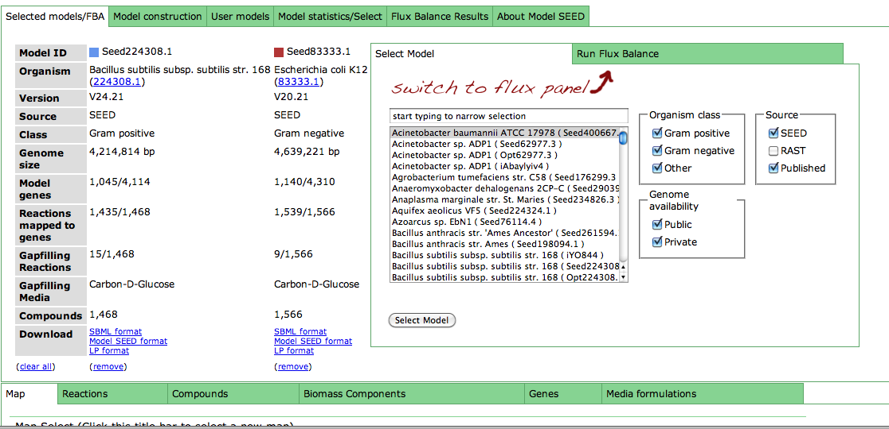
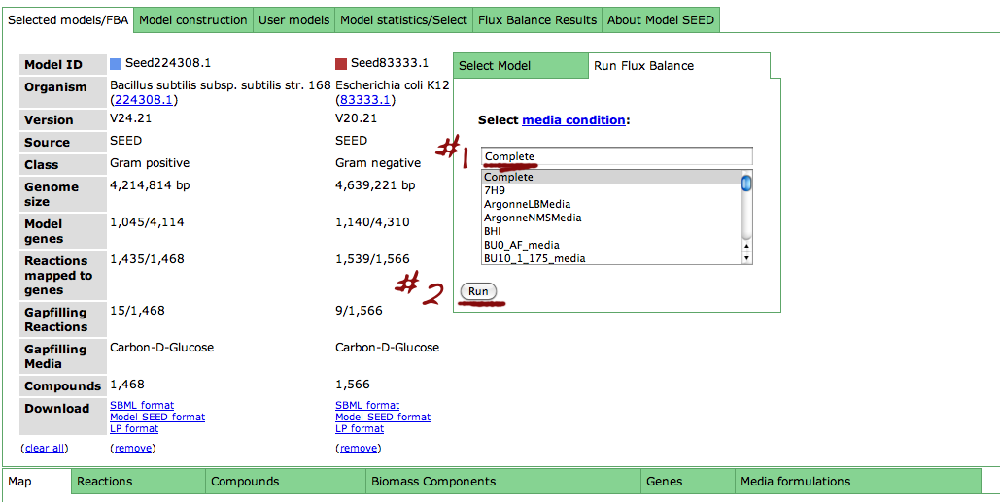
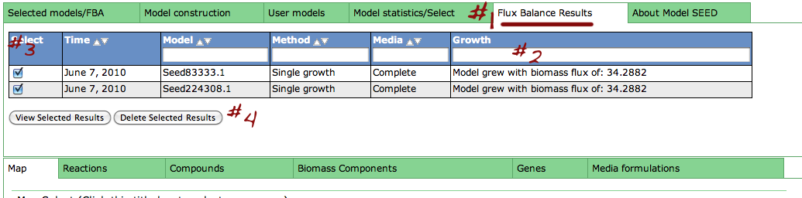
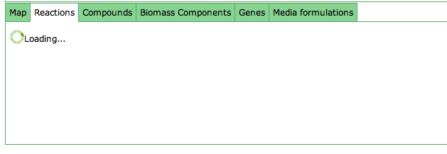
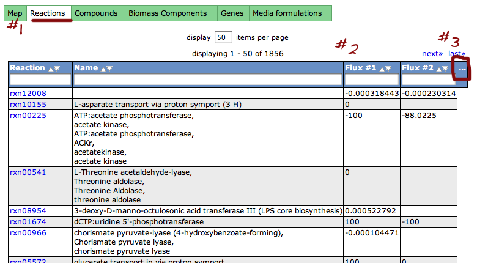

Select one or more models. Then, from the "Selected Models/FBA" tab, click the "Run Flux Balance" sub-tab to switch to the flux panel.
Now, select a media condition on which to run the flux balance analysis: begin typing in the media condition name (#1) until yours is selected or select it from the drop down list. Then click "Run" (#2).
Clicking the "Run" button above will take you to the "Flux Balance Results" tab (#1). From here, you can see basic information about your saved fluxes: the date it was ran on, model ID, method media name and final biomass flux (#2). From here, you can check the select-box next to specific runs you would like to see in more detail (#3) and click "View selected results". You can also delete results by checking the box and clicking "Delete selected results".
Clicking the "View selected results" button will switch to the "Reaction tab", which may take some time to load.
Once the "Reaction" tab (#1) has loaded, you will see the flux results in tabs titled "Flux #1", "Flux #2", etc. for the fluxes you selected (#2). You can add or remove columns from the table by clicking the "..." header (#3).
